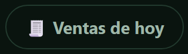
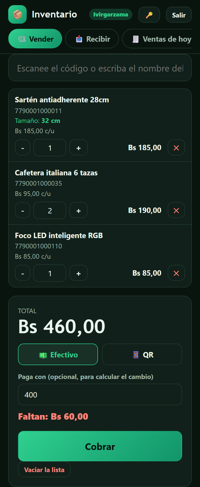
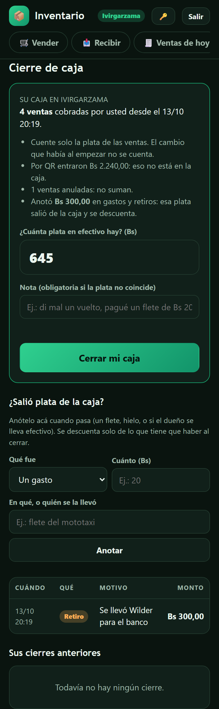

Cómo vender y cerrar la caja
Se aprende en cinco minutos.
Tres reglas: entre siempre con su usuario (no preste la clave); registre cada venta en el momento; y al terminar el turno, cierre su caja.
1 Entrar
Abra loscaseritos.com/inventario, ponga su usuario y su clave y toque Entrar. Arriba ve el nombre de su tienda.
Arriba tiene cuatro botones:
 | Cobrar al cliente. |
 | Anotar la mercadería que llegó. |
 | Ver lo cobrado hoy y anular un error. |
 | Anotar gastos y cerrar su caja. |
Consejo: en el menú del navegador (los tres puntitos) elija "Agregar a la pantalla de inicio" y le queda como una aplicación.
2 Vender
- Escanee el código o escriba parte del nombre, y toque el producto.
- Ajuste la cantidad con + y −.
- Elija Efectivo o QR (elíjalo bien: de eso depende su caja).
- Si paga en efectivo, escriba con cuánto paga y le dice el cambio.
- Toque Cobrar.
- Si el producto viene en tamaños o modelos, elija el que se lleva el cliente.
- Si al escanear suena un pitido, ese producto no está cargado: avísele al dueño.
- Si se corta internet al cobrar, toque Cobrar otra vez: no se cobra dos veces.

3 Si dice que no hay
Sale un cuadro naranja y la venta todavía no se hizo. Si de verdad tiene el producto en la mano, toque "Lo tengo en la mano, vender igual"; si no, "No vender". No lo toque por costumbre: sirve para descubrir mercadería que falta.
4 Me equivoqué al cobrar
En Ventas de hoy, toque Anular venta y escriba el motivo. La mercadería vuelve al stock. Puede anular solo sus ventas y en los primeros 30 minutos; después, lo hace el dueño.
5 Llegó mercadería
En Recibir, escanee o busque cada producto, ponga cuántos llegaron de verdad (cuéntelos, no copie la factura) y toque Registrar entrada.
6 La caja

Si sale plata durante el día (un flete, o el dueño se lleva efectivo), anótelo en el momento en "¿Salió plata de la caja?": elija qué fue, cuánto, y toque Anotar.
Al terminar el turno:
- Vaya a Caja.
- Cuente la plata de sus ventas. No cuente el cambio con el que empezó ni lo cobrado por QR.
- Escriba cuánto hay y toque Cerrar mi caja.
Si no coincide, cuente de nuevo. Si está bien contado, escriba en la Nota qué pasó y cierre igual.
? Si algo no anda
| Lo que pasa | Qué hacer |
|---|---|
| "No hay conexión" | Revise el internet y toque el botón otra vez. La venta armada no se pierde. |
| "La sesión terminó" | Ponga su clave otra vez. Lo que estaba armando sigue ahí. |
| Olvidé la clave, o "Demasiados intentos" | No siga probando: pídale al dueño una clave nueva. Para cambiarla usted, toque la llave 🔑. |
| No encuentro un producto, o el precio está mal | No lo cobre "a ojo": avísele al dueño. |
| La página no abre | Avísele al dueño. |